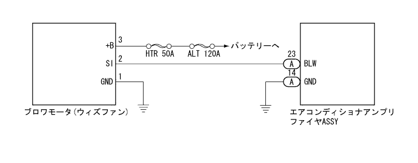
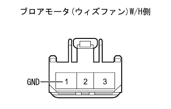
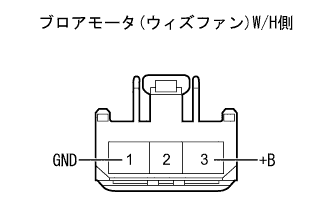
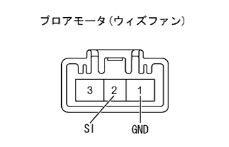
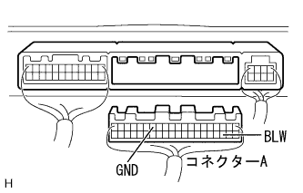
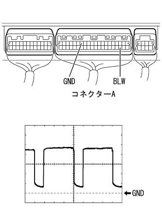

Heater & Air Conditioner System Blower Motor Circuit |

| Step 1 | Perform TaSCAN Active Test (Blower Level) |
Using SST (TaSCAN), operate according to the screen instructions and perform the Active Test.
| Item Name | Test Details | Restrictions |
|---|---|---|
| Blower Airflow | Blower motor operation | Range 0 to 31 (Level) |
| Result | Proceed to |
|---|---|
| Active Test is not performed normally | A |
| Active Test is performed normally | B |
|
| ||||
| A | |
| Step 2 | Inspect Fuse (Engine Room Relay Block (HTR)) |
Using SST (Toyota electrical tester), measure the resistance of the HTR fuse.
| Tester Connection | Condition | Standard |
|---|---|---|
| HTR | Always | Below 1 Ω |
|
| ||||
| OK | |
| Step 3 | Inspect Wire Harness and Connector (Blower Motor (with Fan) - Body Ground) |
for reference.Disconnect the blower motor (with fan) connector.
 |
Using SST (Toyota electrical tester), measure the resistance between the terminals of the blower motor (with fan) vehicle side wire harness connector.
| Tester Connection (Terminal Symbol) | Condition | Standard |
|---|---|---|
| 1 (GND) - Body ground | Always | Below 1 Ω |
|
| ||||
| OK | |
| Step 4 | Inspect Wire Harness and Connector (Power Source - Blower Motor (with Fan)) |
for reference.Turn IG ON.
 |
Using SST (Toyota electrical tester), measure the voltage between the terminals of the blower motor (with fan) vehicle side wire harness connector.
| Tester Connection (Terminal Symbol) | Condition | Standard |
|---|---|---|
| 1(GND) - 3(+B) | IG ON | 11 to 14 V |
|
| ||||
| OK | |
| Step 5 | Inspect Blower Motor (with Fan) (SI Terminal) |
Disconnect the air conditioner amplifier assembly connector.
Connect the blower motor (with fan) connector.
Turn IG ON.
 |
Using SST (Toyota electrical tester), measure the voltage between the terminals of the blower motor (with fan) connector.
| Tester Connection (Terminal Symbol) | Condition | Standard |
|---|---|---|
| 1(GND) - 2(SI) | IG ON | 4.5 to 5.5 V |
|
| ||||
| OK | |
| Step 6 | Inspect Wire Harness and Connector (Blower Motor (with Fan) - Air Conditioner Amplifier Assembly) |
for reference.Turn IG ON.
 |
Using SST (Toyota electrical tester), measure the voltage between the terminals of the air conditioner amplifier assembly vehicle side wire harness connector. (For Terminals of ECU, see)
| Tester Connection (Terminal Symbol) | Condition | Standard |
|---|---|---|
| A23(BLW) - A14(GND) | IG ON BLW OFF | 4.5 to 5.5 V |
|
| ||||
| OK | |
| Step 7 | Inspect Air Conditioner Amplifier Assembly (BLW Terminal) |
Connect the air conditioner amplifier assembly connector.
Turn IG ON.
 |
Using SST (TaSCAN), inspect the waveform between the terminals of the air conditioner amplifier assembly connector. (For Terminals of ECU, see)
| Item | Description |
|---|---|
| Terminal No. | A23(BLW) - A14(GND) |
| Tool Setting | 2V/DIV、500μs/DIV |
| Condition | IG ON, blower switch LO |
|
| ||||
| OK | ||
| ||